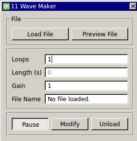

Requirements: Qwt, Plot helper classes (included)
Limitations: none noted

This module loads data from an ASCII formatted file. It samples one value from the the file on every time step and creates and generates an output signal. The module computes the time length of the waveform based on the current real-time period. This is an easy way to test your algorithms on pre-recorded data as if it were being acquired in real-time. This module is already included in RTXI v1.3+ by default. You may download this source code and edit it. Compiling and installing this module will overwrite the bundled version of Wavemaker.